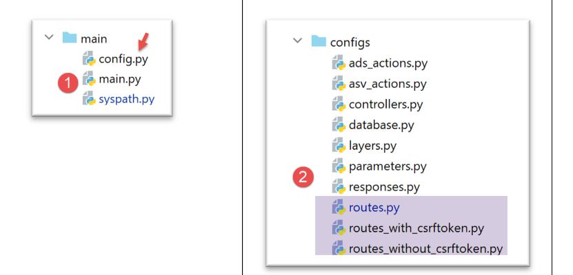
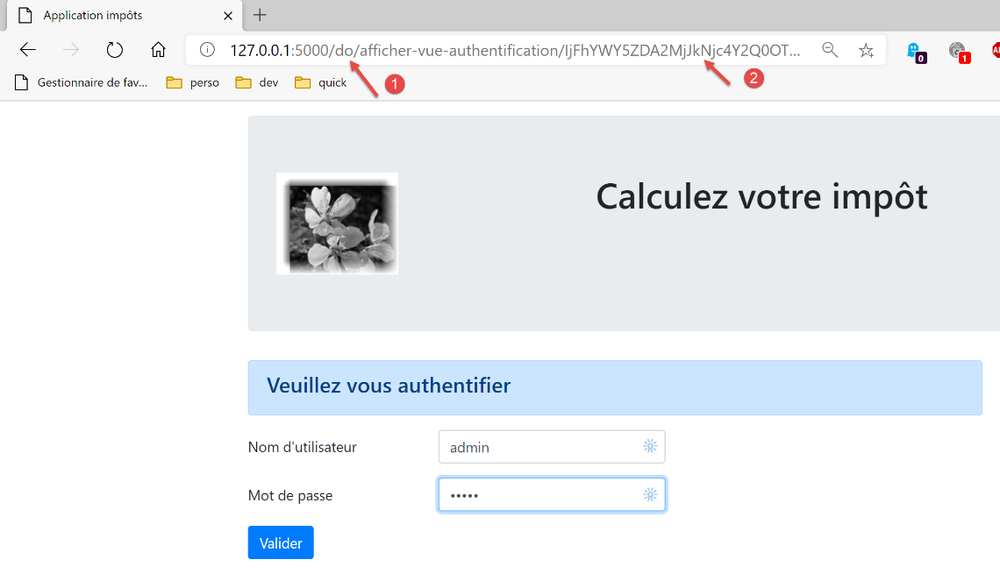

36. 应用练习：第 16 版

36.1. 简介
我们应用程序中的 URL 目前采用 [/action/param1/param2/…] 的形式。我们希望能够为这些 URL 添加前缀。例如，使用前缀 [/do] 时，URL 将采用 [/do/action/param1/param2/…] 的形式。
36.2. 新的路由配置

- 在 [2] 中，将修改路由计算逻辑；
- 在 [1] 中，修改 [config] 文件以反映此变更；
[config]配置如下所示：
| def configure(config: dict) -> dict:
# syspath configuration
import syspath
config['syspath'] = syspath.configure(config)
# application setup
import parameters
config['parameters'] = parameters.configure(config)
# database configuration
import database
config["database"] = database.configure(config)
# instantiation of application layers
import layers
config['layers'] = layers.configure(config)
# configuration MVC of the [web] layer
config['mvc'] = {}
# web] layer controller configuration
import controllers
config['mvc'].update(controllers.configure(config))
# actions ASV (Action Show View)
import asv_actions
config['mvc'].update(asv_actions.configure(config))
# actions ADS (Action Do Something)
import ads_actions
config['mvc'].update(ads_actions.configure(config))
# response configuration HTTP
import responses
config['mvc'].update(responses.configure(config))
# route configuration
import routes
routes.configure(config)
# we return the configuration
return config
|
- 第 37–39 行：[routes] 模块（第 38 行）负责处理路由配置（第 39 行）；
不包含 CSRF 令牌的路由文件 [configs/routes_without_csrftoken] 的演变如下：
| # dependencies
from flask import redirect, request, session, url_for
from flask_api import status
# application configuration
config = {}
# the front controller
def front_controller() -> tuple:
# forward the request to the main controller
main_controller = config['mvc']['controllers']['main-controller']
return main_controller.execute(request, session, config)
# application root
def index() -> tuple:
# redirect to /init-session/html
return redirect(url_for("init_session", type_response="html"), status.HTTP_302_FOUND)
# init-session
def init_session(type_response: str) -> tuple:
# execute the controller associated with the action
return front_controller()
# authenticate-user
def authentifier_utilisateur() -> tuple:
# execute the controller associated with the action
return front_controller()
# calculate-tax
def calculer_impot() -> tuple:
# execute the controller associated with the action
return front_controller()
…
|
该文件已移除了路由。仅保留了与路由相关的函数。
包含 CSRF 令牌的路线文件 [configs/routes_with_csrftoken] 也遭遇了同样的命运：
| # dependencies
from flask import redirect, request, session, url_for
from flask_api import status
from flask_wtf.csrf import generate_csrf
# configuration
config = {}
# the front controller
def front_controller() -> tuple:
# forward the request to the main controller
main_controller = config['mvc']['controllers']['main-controller']
return main_controller.execute(request, session, config)
# application root
def index() -> tuple:
# redirect to /init-session/html
return redirect(url_for("init_session", type_response="html", csrf_token=generate_csrf()), status.HTTP_302_FOUND)
# init-session
def init_session(type_response: str, csrf_token: str) -> tuple:
# execute the controller associated with the action
return front_controller()
# authenticate-user
def authentifier_utilisateur(csrf_token: str) -> tuple:
# execute the controller associated with the action
return front_controller()
…
# init-session-without-csrftoken for json and xml clients
def init_session_without_csrftoken(type_response: str) -> tuple:
# redirect to /init-session/type_response
return redirect(url_for("init_session", type_response=type_response, csrf_token=generate_csrf()),
status.HTTP_302_FOUND)
|
路由由以下 [configs/routes] 模块计算：
| from flask import Flask
def configure(config: dict):
# route settings
# flask application
app = Flask(__name__, template_folder="../flask/templates", static_folder="../flask/static")
config['app'] = app
# import routes from web application
if config['parameters']['with_csrftoken']:
import routes_with_csrftoken as routes
else:
import routes_without_csrftoken as routes
# inject configuration into routes
routes.config = config
# the application's URL prefix
prefix_url = config["parameters"]["prefix_url"]
# token CSRF
with_csrftoken = config["parameters"]['with_csrftoken']
if with_csrftoken:
csrftoken_param = f"/<string:csrf_token>"
else:
csrftoken_param = ""
# flask application routes
# application root
app.add_url_rule(f'{prefix_url}/', methods=['GET'],
view_func=routes.index)
# init-session
app.add_url_rule(f'{prefix_url}/init-session/<string:type_response>{csrftoken_param}', methods=['GET'],
view_func=routes.init_session)
# init-session-without-csrftoken
if with_csrftoken:
app.add_url_rule(f'{prefix_url}/init-session-without-csrftoken/<string:type_response>',
methods=['GET'],
view_func=routes.init_session_without_csrftoken)
# authenticate-user
app.add_url_rule(f'{prefix_url}/authentifier-utilisateur{csrftoken_param}', methods=['POST'],
view_func=routes.authentifier_utilisateur)
# calculate-tax
app.add_url_rule(f'{prefix_url}/calculer-impot{csrftoken_param}', methods=['POST'],
view_func=routes.calculer_impot)
# batch tax calculation
app.add_url_rule(f'{prefix_url}/calculer-impots{csrftoken_param}', methods=['POST'],
view_func=routes.calculer_impots)
# lister-simulations
app.add_url_rule(f'{prefix_url}/lister-simulations{csrftoken_param}', methods=['GET'],
view_func=routes.lister_simulations)
# delete-simulation
app.add_url_rule(f'{prefix_url}/supprimer-simulation/<int:numero>{csrftoken_param}', methods=['GET'],
view_func=routes.supprimer_simulation)
# end of session
app.add_url_rule(f'{prefix_url}/fin-session{csrftoken_param}', methods=['GET'],
view_func=routes.fin_session)
# display-calculation-tax
app.add_url_rule(f'{prefix_url}/afficher-calcul-impot{csrftoken_param}', methods=['GET'],
view_func=routes.afficher_calcul_impot)
# get-admindata
app.add_url_rule(f'{prefix_url}/get-admindata{csrftoken_param}', methods=['GET'],
view_func=routes.get_admindata)
# afficher-vue-calcul-impot
app.add_url_rule(f'{prefix_url}/afficher-vue-calcul-impot{csrftoken_param}', methods=['GET'],
view_func=routes.afficher_vue_calcul_impot)
# display-view-authentication
app.add_url_rule(f'{prefix_url}/afficher-vue-authentification{csrftoken_param}', methods=['GET'],
view_func=routes.afficher_vue_authentification)
# display-view-list-simulations
app.add_url_rule(f'{prefix_url}/afficher-vue-liste-simulations{csrftoken_param}', methods=['GET'],
view_func=routes.afficher_vue_liste_simulations)
# display-view-error_list
app.add_url_rule(f'{prefix_url}/afficher-vue-liste-erreurs{csrftoken_param}', methods=['GET'],
view_func=routes.afficher_vue_liste_erreurs)
# special case
if with_csrftoken:
# init-session-without-csrftoken for json and xml clients
app.add_url_rule(f'{prefix_url}/init-session-without-csrftoken', methods=['GET'],
view_func=routes.init_session_without_csrftoken)
|
- 第 6–8 行：创建 Flask 应用程序并将其添加到配置中；
- 第 10–14 行：导入适用于当前情况的路由文件。请注意，导入的文件实际上并不包含路由；它仅包含与路由相关的函数；
- 第 17 行：与路由相关的函数需要了解应用程序的配置；
- 第 20 行：我们指定 URL 前缀。此处可以留空；
- 第 22–27 行：与不包含 CSRF 令牌的路由相比，包含 CSRF 令牌的路由多了一个参数。为处理这一差异，我们使用 [csrftoken_param] 变量：
- 如果路由中没有 CSRF 令牌，该变量包含空字符串；
- 若存在 CSRF 令牌，则包含字符串 [/<string:csrf_token>]；
- 第 29–96 行：应用程序中的每个路由都与第 10–14 行导入的 routes 文件中的某个函数相关联；
36.3. 新的控制器

在之前的版本中，所有控制器都是通过以下方式获取当前正在处理的操作的：
| def execute(self, request: LocalProxy, session: LocalProxy, config: dict) -> (dict, int):
# path elements are retrieved
params = request.path.split('/')
action = params[1]
|
如果存在前缀（例如 [/do/lister-simulations]），这段代码将无法正常工作。在这种情况下，第 3 行中的 action 会变成 [do]，因此结果将不正确。
我们将此代码修改如下：
| def execute(self, request: LocalProxy, session: LocalProxy, config: dict) -> (dict, int):
# path elements are retrieved
prefix_url = config["parameters"]["prefix_url"]
params = request.path[len(prefix_url):].split('/')
action = params[1]
|
我们在所有控制器中都这样做。
36.4. 新的模型

在上一版本中，每个模型类会生成如下所示的模型：
| def get_model_for_view(self, request: Request, session: LocalProxy, config: dict, résultat: dict) -> dict:
# we encapsulate the paged data in the model
modèle = {}
# application status
état = résultat["état"]
# the model depends on the state
…
# csrf token
modèle['csrf_token'] = super().get_csrftoken(config)
# possible actions from the view
modèle['actions_possibles'] = […]
# we render the model
return modèle
|
现在模型将多出一个键，即 URL 前缀：
| def get_model_for_view(self, request: Request, session: LocalProxy, config: dict, résultat: dict) -> dict:
# we encapsulate the paged data in the model
modèle = {}
# application status
état = résultat["état"]
# the model depends on the state
…
# csrf token
modèle['csrf_token'] = super().get_csrftoken(config)
# possible actions from the view
modèle['actions_possibles'] = […]
# URL prefix
modèle["prefix_url"] = config["parameters"]["prefix_url"]
# we render the model
return modèle
|
36.5. 新的片段

所有包含 URL 的片段都必须进行修改。
[v-authentication] 片段
<!-- form HTML - post its values with the [authenticate-user] action -->
<form method="post" action="{{modèle.prefix_url}}/authentifier-utilisateur{{modèle.csrf_token}}">
<!-- title -->
<div class="alert alert-primary" role="alert">
<h4>Veuillez vous authentifier</h4>
</div>
…
</form>
[v-calcul-impot] 片段
<!-- form HTML posted -->
<form method="post" action="{{modèle.prefix_url}}/calculer-impot{{modèle.csrf_token}}">
<!-- 12-column message on blue background -->
…
</form>
[v-liste-simulations] 片段
…
{% if modèle.simulations is defined and modèle.simulations|length!=0 %}
…
<!-- simulation table -->
<table class="table table-sm table-hover table-striped">
…
<tr>
<th scope="row">{{simulation.id}}</th>
<td>{{simulation.marié}}</td>
<td>{{simulation.enfants}}</td>
<td>{{simulation.salaire}}</td>
<td>{{simulation.impôt}}</td>
<td>{{simulation.surcôte}}</td>
<td>{{simulation.décôte}}</td>
<td>{{simulation.réduction}}</td>
<td>{{simulation.taux}}</td>
<td><a href="{{modèle.prefix_url}}/supprimer-simulation/{{simulation.id}}{{modèle.csrf_token}}">Supprimer</a></td>
</tr>
{% endfor %}
</tr>
</tbody>
</table>
{% endif %}
[v-menu] 片段
<!-- bootstrap menu -->
<nav class="nav flex-column">
<!-- display a list of links HTML -->
{% for optionMenu in modèle.optionsMenu %}
<a class="nav-link" href="{{modèle.prefix_url}}{{optionMenu.url}}{{modèle.csrf_token}}">{{optionMenu.text}}</a>
{% endfor %}
</nav>
36.6. 新的 HTML 响应

在之前的版本中，HTML 响应代码以重定向结尾：
| class HtmlResponse(InterfaceResponse):
def build_http_response(self, request: LocalProxy, session: LocalProxy, config: dict, status_code: int,
résultat: dict) -> (Response, int):
# the HTML response depends on the status code returned by the controller
état = résultat["état"]
…
# now it's time to generate the URL redirection, not forgetting the CSRF token if requested
if config['parameters']['with_csrftoken']:
csrf_token = f"/{generate_csrf()}"
else:
csrf_token = ""
# redirect response
return redirect(f"{ads['to']}{csrf_token}"), status.HTTP_302_FOUND
|
该代码现在变为如下所示：
| def build_http_response(self, request: LocalProxy, session: LocalProxy, config: dict, status_code: int,
résultat: dict) -> (Response, int):
…
# now it's time to generate the URL redirection, not forgetting the CSRF token if requested
if config['parameters']['with_csrftoken']:
csrf_token = f"/{generate_csrf()}"
else:
csrf_token = ""
# redirect response
return redirect(f"{config['parameters']['prefix_url']}{ads['to']}{csrf_token}"), status.HTTP_302_FOUND
|
36.7. 测试

让我们在 [parameters] 配置文件中添加以下前缀：
…
# token csrf
"with_csrftoken": True,
# bases gérées MySQL (mysql), PostgreSQL (pgres)
"databases": ["mysql", "pgres"],
# préfixe des URL de l'application
# mettre la chaîne vide si on ne veut pas de préfixe ou /préfixe sinon
"prefix_url": "/do",
…
让我们启动应用程序，然后请求 URL [http://localhost:5000/do]；响应如下：

- 在 [1] 中，URL 前缀；
- 在 [2] 中，CSRF 令牌；
还可以使用 [http-clients/09] 中的控制台测试来测试该应用程序：

在配置文件 [1] 和 [2] 中，服务器 URL 必须包含 URL 前缀：
"server": {
# "urlServer": "http://127.0.0.1:5000",
"urlServer": "http://127.0.0.1:5000/do",
"user": {
"login": "admin",
"password": "admin"
},
"url_services": {
…
}
- 第 3 行：服务器 URL 现在包含 URL 前缀；
完成此更改后，所有控制台测试都应能正常运行。